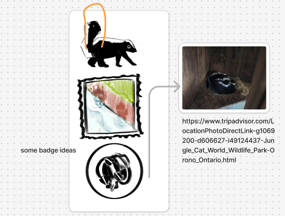
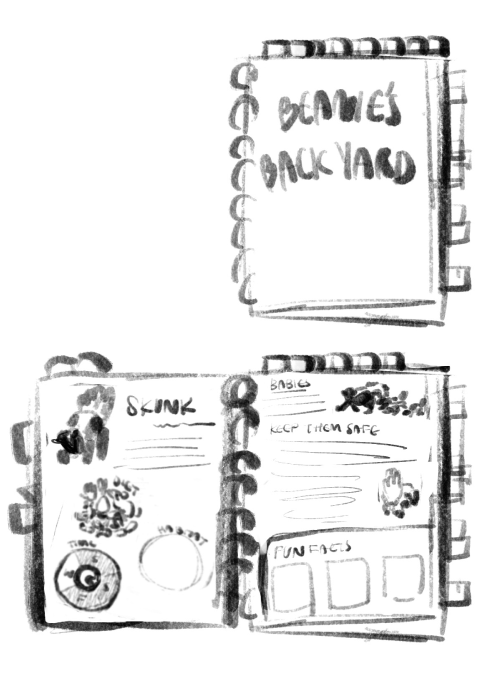
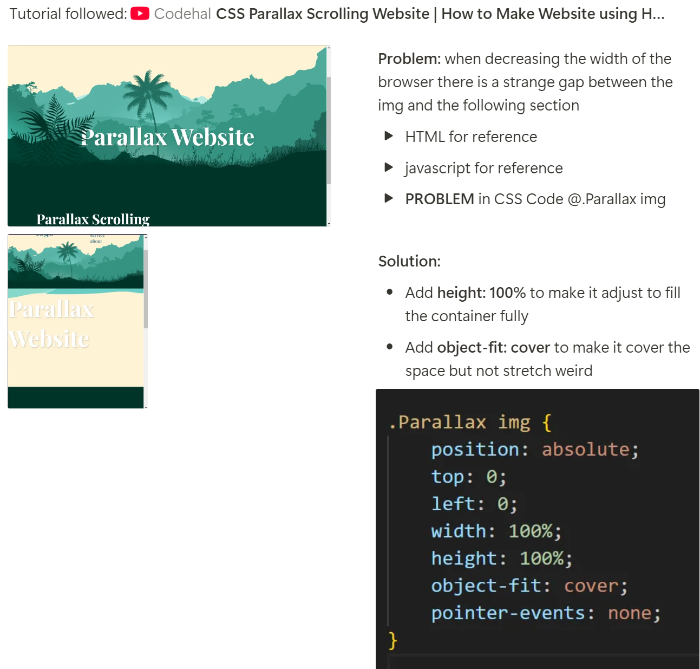
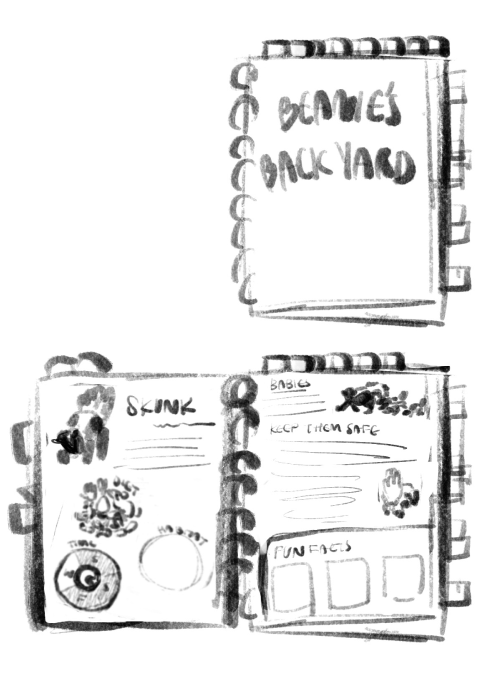
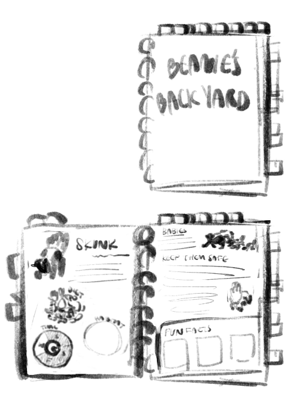

Overview:
First week of our group project!! Working on brainstorming ideas and setting up our organization: discord, figma, notion, google drive. We are narrowing down what we want from this project; do we want to have multiple pages, scrolling vertically or horizontally, how to incorporate the flashlight interactivity?
We have also assigned roles to each member:
Each member is to create and research 2 animals, add to the mood board, and create some concept art. We want to capture the inspiration of a children’s book in this game and to make sure our interactivity is suitable and fun for our audience.
Tuesday Jan 25:
We discussed the roles we need to have and the set up of our project organization.
Friday Jan 31:
Researched and found some inspiration to add to the mood boards
Sunday Feb 2:
We had a group meeting to discuss our work brainstorming and sketches that we did, as well as the pieces of our preproduction document. We assigned roles and determined next steps. We settled on the animals we wanted to include and each have ones we need to create sketches for. Having quite regular meetings with everyone having brought some ideas really helped make the vision for the final product a little more clear, I appreciated the questions my team members brought up on detailed ways that the resource would move. Although we had assumed each other understood it was helpful to verbalize it. (Ex. The bushes are meant to move off screen horizontally as the user scrolls, creating an illusion that the user is moving deeper into the woods.)
Tuesday Feb 4:
We had our group project pitches!
Overview:
This was the week of concept art and really building out our idea. How are we going to communicate the story, what style do we want, what interactive mechanisms are possible for us with our limited knowledge.
Wednesday Feb 5:
Worked on animal research and finding references, I really appreciate this topic, I am very excited to see this come together more. I am hoping to know how to highlight the animals in a way that helps express how cool it is to learn about these animals. I am worried that we will not be able to make something complex enough that can house all this information in a fun and interactive way.
Thursday Feb 6:
Create some sketches for the scrapbook and the animals I chose (Skunk and Deer). It was difficult to think of how to simplify the notebook more.


Sunday Feb 9:
Mapped out the concept art and look at everyone else’s, I compiled and watched some intro to scrollyteling youtube tutorials. I was quite lost in how to even start with it so I was only really able to watch and copy some very simple tutorials. Realizing how limited my knowledge was I also watched a few intro to html videos.
Monday Feb 10:
We had an informal discussion brainstorming some ideas for the notebook. This was very useful in getting on the same page of what we were thinking of! I think it was very useful to take turns roughly sketching out what we had assumed the notebook to look like and describing how to access it. This really cleared up the vision and I was able to visualize it better to sketch something out.
Overview: I have been watching videos and troubleshooting. It has been fun but mostly tricky to figure out how to best code this scrolly telly. I want it to have a smooth look and I followed a tutorial hoping it would help but it uses eventlisteners which I think makes sense but from other videos I have seen there seems like a better way to do this. I am hoping to look more into libraries and what other people have created that could better suit our needs for this project. Emily and Bonnie have been working more on the visuals while me and Priya are looking more into the code. There is a lot I want to learn about this but I am finding myself troubleshooting and trying to brute force my way through some of this as I do not quite have the vocabulary to make what I want to. I am piecing together different tutorials but they don’t quite fit.
Reading break:
Watched and followed a tutorial on youtube: https://www.youtube.com/watch?v=kmM6mqvnxcs&list=PLA9oyBlTfuCjS_sWxDywD9QHjH_mO0yf1
Some troubleshooting I did to make it better suited to our purposes:

Other tutorials I have been looking at (and trying my best to understand):
https://www.youtube.com/watch?v=UgIwjLg4ONk
https://www.youtube.com/watch?v=Yo3j_Dx4u7c
Tuesday Feb 25:
Big questions I need to find answers to -
How to best activate scrolling at certain times/ at certain pages when scrolling?
How to use libraries and how can they improve the scrollytelly creation?
How to add a pop up notebook (Priya is also looking into this)?
Overview: Continued exploration of scrolling mechanisms and how to use libraries to make that easier. A lot of progress in this front (YAY), it think the next step is to swap out for some of our images. And also move on to another interaction = how we can pause the scrolling when the notebook appears.
Thursday
Discussions and decisions on font. We had a few different choices but Bonnie and Emily played around more with the options we all had shared on the figjam board. We were able to decide on the font pairing and the thickness of it.
Saturday
Emily has been working on the illustrations, Bonnie on refining the notebook. Priya and I have been looking into scrollmagic and it capabilities.
Tutorial 1:https://www.youtube.com/watch?v=RJ_lLOESI6o
So linking to libraries… I am learning that through your vscode you can simply call upon these libraries with a magic line of text and it will just access them. This is crazy…
Sunday
Working with scrollmagic, its working but following the tutorials is a bit hard to integrate and change up what I want to make happen! I am getting the hang of positioning images and setting up new files at least.
Monday
I had chatgpt do some preliminary work for me, I asked it to create a starting point (particularly because I was having trouble importing the correct up to date libraries - Scrollmagic and GSAP). I figured out some big things from this, and the current experiment has taught me a LOT of what I needed to know.
Challenges:
1. How to make sure that the image is centered and placed where it should be. This was a big part of what was frustrating me before I was even able to start the animation process.
Solution = Breaking down each section, starting large and making sure the div that held everything was properly sized. Then moving to the div inside that. It also helped to make the sections coloured when trouble shooting, so that something visual was also happening when I changes the code.
2. How to make things move when I wanted them to.
Solution = I learned about the timeline tags, that can determine when something moves. With scrollmagic, it automatically makes the following timeline item happen after.
Overview
Thursday
Tour of the repo with the team! We went over the code together and planned out what we should do next.
Emily and Bonnie finished some of the illustrations and I was able to integrate them into the framework I had built. We got to play around with how to control things and tweak some of the scroll interactions.
I feel like I am starting to better understand what this can and cannot do and how to make some workarounds. I have been using chatgpt to help with this process quite a bit, it is really helpful in building the code and for asking specific questions when you do not know the exact vocabulary to search for. It sometimes also does not know how to fix a problem but even that has been a good jumping off place to search for the answer myself.
We are planning to split work for me and Priya. I am tackling integrating the notebook and trying to make placeholders for the beginning sequence, while Priya is setting to work on the ending sequence.
Current state of of things with the illustrations and the notebook in it:
There are some pacing problems that need to be sorted out a bit better but the base is solid and I think that will not be too hard!
Thursday
Tour of the repo with the team! We went over the code together and planned out what we should do next.
Emily and Bonnie finished some of the illustrations and I was able to integrate them into the framework I had built. We got to play around with how to control things and tweak some of the scroll interactions.
I feel like I am starting to better understand what this can and cannot do and how to make some workarounds. I have been using chatgpt to help with this process quite a bit, it is really helpful in building the code and for asking specific questions when you do not know the exact vocabulary to search for. It sometimes also does not know how to fix a problem but even that has been a good jumping off place to search for the answer myself.
We are planning to split work for me and Priya. I am tackling integrating the notebook and trying to make placeholders for the beginning sequence, while Priya is setting to work on the ending sequence.
There are some pacing problems that need to be sorted out a bit better but the base is solid and I think that will not be too hard!
Friday
Adding the notebook in and trying to experiment more with the scroll timing.
Current state of things:

 
